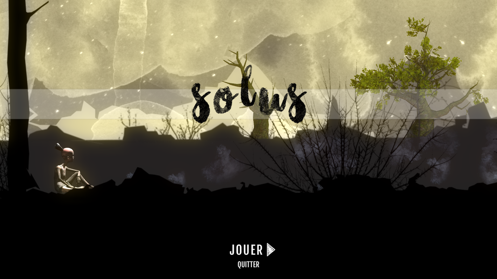
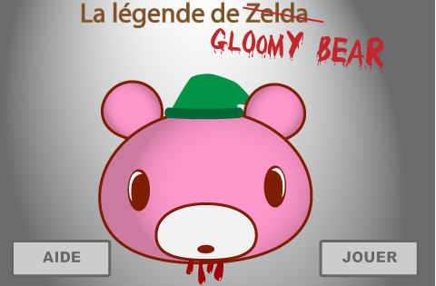

Solus - Un jeu de plateformes/exploration/puzzle en 2.5DRéalisation en équipe - Kathleen Blackburn et Michaël Dallaire

La légende de pas Zelda – Un jeu de hasard et stratégie programmé en ActionScript. Le personnage de “Gloomy bear” ne m’appartient pas, mais j’ai réalisé tout le contenu visuel dans Illustrator.